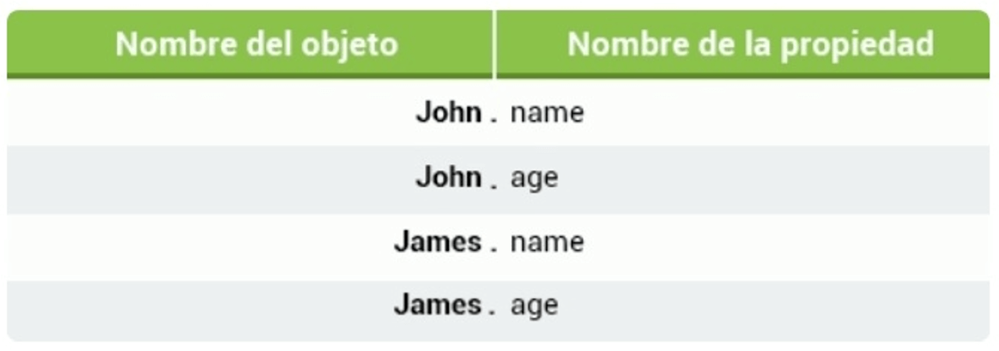

La variables en JavaScript son contenedores para valores y datos. Los objetos también son variables, pero ellos pueden contener muchas variables.
Piensa en los objetos como una lista de valores que son escritos como pares name:value (nombre:valor), con los nombres y los valores separados por dos puntos.
Ejemplo:
var person = {
name: "John", age: 31, favColor: "green", height: 183
};
Estos valores son llamados propiedades.
Los objetos en JavaScript son contenedores para valores con nombre.
Propiedades de objetos
Puedes acceder a las propiedades de los objetos de dos maneras.
Este ejemplo demuestra como acceder la edad de nuestro objeto persona.
var persona = {
nombre: "John", edad: 31, colorFav: "verde", altura: 183
};
var x = persona.edad;
var y = persona['edad'];
La propiedad length incorporada en JavaScript es utiIizada para contar el número de caracteres en el valor de una propiedad o el número de caracteres en una cadena de texto.
var curso = {nombre: "JavaScript", lecciones: 41};
document.write(curso.nombre.length); // 10
Los objects (objetos) son uno de los conceptos fundamentales de JavaScript.
Métodos de objetos
Un método de objeto es una propiedad que contiene la definición de una función.
Utiliza la siguiente sintaxis para acceder al método del objeto.
nombreDelObjeto.nombreDelMetodo()
Tal y como ya sabes, el método document.wrlte() despliega datos. La función wrlte() es un método del objeto document.
document.write("Este es algún texto");
Los métodos son funciones que han sido guardadas como propiedades de objetos.
Code Coach
Introduciendo objetos
Creando tus propios objetos
El constructor de objetos
En la lección anterior, creamos un objeto utilizando la sintaxis de literal de objeto (o inicializador).
var persona = {
nombre: "John", edad: 42, colorFav: "verde"
};
Esto te permite crear un único objeto. Algunas veces, necesitamos configurar un "tipo de objeto" que pueda ser usado para crear un número determinado de objetos de un mismo tipo.
La forma estándar para crear un "tipo de objeto" es utilizando una función constructora de objetos.
function persona (nombre, edad, color) {
this.nombre = nombre;
this.edad = edad;
this.colorFav = color;
};
La función anterior (persona) es un constructor de objetos, que toma tres parámetros y los asigna a las propiedades del objeto.
La palabra clave this se refiere al objeto actual.
Nota que this no es una variable. Es una palabra clave, y su valor no puede ser cambiado.
Creando objetos
Una vez que tengas un constructor de objetos, puedes utilizar la palabra clave new para crear nuevos objetos del mismo tipo.
var p1 = new persona("John", 42, "verde");
var p2 = new persona("Amy", 21, "rojo");
document.write(p1.edad); // Salida 42
document.write(p2.nombre); // Salida "Amy"
Las variables p1 y p2 son ahora objetos del tipo persona. A sus propiedades les son asignados los valores correspondientes.
Creando objetos
Considera el siguiente ejemplo.
function person (name, age) {
this.name = name;
this.age = age;
}
var John = new person("John", 25);
var James = new person("James", 21);
Accede a las propiedades del objeto utilizando la sintaxis de punto, como hiciste anteriormente.

Es esencial comprender la creación de objetos.
Code Coach
Creando tus propios objetos
Inicialización de objetos
Inicialización de objetos
Utiliza la sintaxis de literal de objetos o inicializador para crear un sólo objeto.
var John = {name: "John", age: 25};
var James = {name: "James", age: 21};
Los objetos consisten en propiedades que se utilizan para describir un objeto. Los valores de las propiedades de los objetos pueden contener tipos de datos primitivos u otros objetos.
Utilizando inicializadores de objetos
Los espacios y saltos de línea no son importantes. La definición de un objeto puede expandirse a múltiples líneas.
var John = {
name: "John",
age: 25
};
var James = {
name: "James",
age: 21
};
No importa cómo el objeto sea creado, la sintaxis para acceder a las propiedades y métodos no cambia.
document.write(John.age);
No te olvides de la segunda sintaxis de acceso: John['age'].
Añadiendo métodos
Métodos
Los métodos son funciones que se guardan como propiedades de un objeto.
Utiliza la siguiente sintaxis para crear un método de objeto:
nombreDelMetodo = function () { líneas de código }
Accede a un método de objeto utilizando la sintaxis siguiente:
nombreDelObjeto.nombreDelMetodo()
Un método es una función, que pertenece a un objeto. Puede ser referenciada utilizando la palabra clave this.
La palabra clave this es utilizada como una referencia al objeto actual, lo que significa que puedes utilizarla para acceder a las propiedades y métodos de un objeto.
Los métodos se definen dentro de la función constructora.
Por ejemplo:
function persona (nombre, edad) {
this.nombre = nombre;
this.edad = edad;
this.cambiarNombre = function (nombre) {
this.nombre = nombre;
}
}
var p = new persona("David", 21);
p.cambiarNombre("John");
//Ahora p.nombre es igual a "John"
En el ejemplo anterior, hemos definido un método llamado cambiarNombre para nuestra persona, que es una función, que toma un parámetro nombre y se lo asigna a la propiedad nombre del objeto.
this.nombre se refiere a la propiedad nombre del objeto.
El método cambiarNombre cambia la propiedad nombre del objeto a su argumento.
Code Coach
Añadiendo Métodos
Métodos
También puedes definir la función fuera del constructor y asociarla con el objeto.
function persona (nombre, edad) {
this.nombre = nombre;
this.edad = edad;
this.anioDeNac = anioNac;
}
function anioNac() {
return 2016 - this.edad;
}
Como puedes ver, hemos asignado la propiedad anioDeNac del objeto a la función anioNac.
La palabra clave this es utilizada para acceder a la propiedad edad del objeto, que será llamada por el método.
Ten presente que no es necesario escribir los paréntesis de la función cuando es asignada a un objeto.
Métodos
Llama al método como siempre.
function persona (nombre, edad) {
this.nombre = nombre;
this.edad = edad;
this.anioDeNac = anioNac;
}
function anioNac() {
return 2016 - this.edad;
}
var p = new persona("A", 22);
document.write(p.anioDeNac());
Llama al método por el nombre de la propiedad que especificaste en la función constructora, en lugar del nombre de la función.